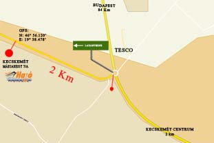
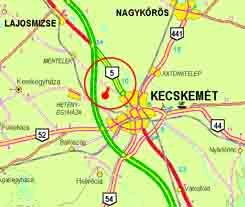

tel:+36 30 9788-120 hajó, csónak, horgászcsónak
Üdvözlöm!
A Híröshajó, Juharos Imre egyéni vállalkozása, katamarán aljú, üvegszálas műanyag hajó, csónak, horgászcsónak tervezésével és gyártásával foglalkozik. Az általunk gyártott hajó, csónak illetve horgászcsónak K mini boat&box, K Maxxi, K Maxxi extra, K Maxxi joker, K1 fisherman, K maxxi cabrio, K2 party, K maxxi party, K maxxi delfin II, valamint K Maxxi XXL fantázianéven kerülnek forgalomba.
A tervezéstől kezdve, a gyártáson keresztűl, a végső minőségellenőrzésig a következő szempontokat tartjuk szem előtt. Minden test - legyen az egy komoly motorral szerelt hajó, egy többszemélyes horgászcsónak, vagy egy két fős kis csónak - a vele szemben támasztható biztonsági követelményeknek maximálisan megfeleljen. A kialakítása messzemenőkig tegye alkalmassá a vele űzött tevékenységek felhőtlen élvezésének, hiszen más-más szempontnak kell, hogy megfeleljen egy sport célú hajó, mint egy csónakázásra szánt csónak, vagy egy - akár többnapos horgásztúrára használt - horgászcsónak.

További fontos szempont még, hogy a gyártás során felhasznált anyagok és technológiák, egy hosszú élettartamú, strapabíró szerkezetet eredményezzenek, mely rendeltetésszerű használat mellett, minimális karbantartással - ami a rendszeres takarítást jelenti - hosszú időn keresztűl híven szolgálja tulajdonosát.
Amennyiben Ön, tisztelt látogató most keres egy elérhető árú, jó ár-érték arányú hajót, csónakot esetleg horgászcsónakot, vagy csak szimplán kíváncsi a termékeinkre, a további oldalakon sok illusztráció mellet, mindenre választ kaphat. Természetesen személyesen, vagy akár telefonon is készséggel állok rendelkezésére.
| Tisztelettel Juharos Imre | A nagyításhoz kattintson a térképekre! | |
|  |  | |